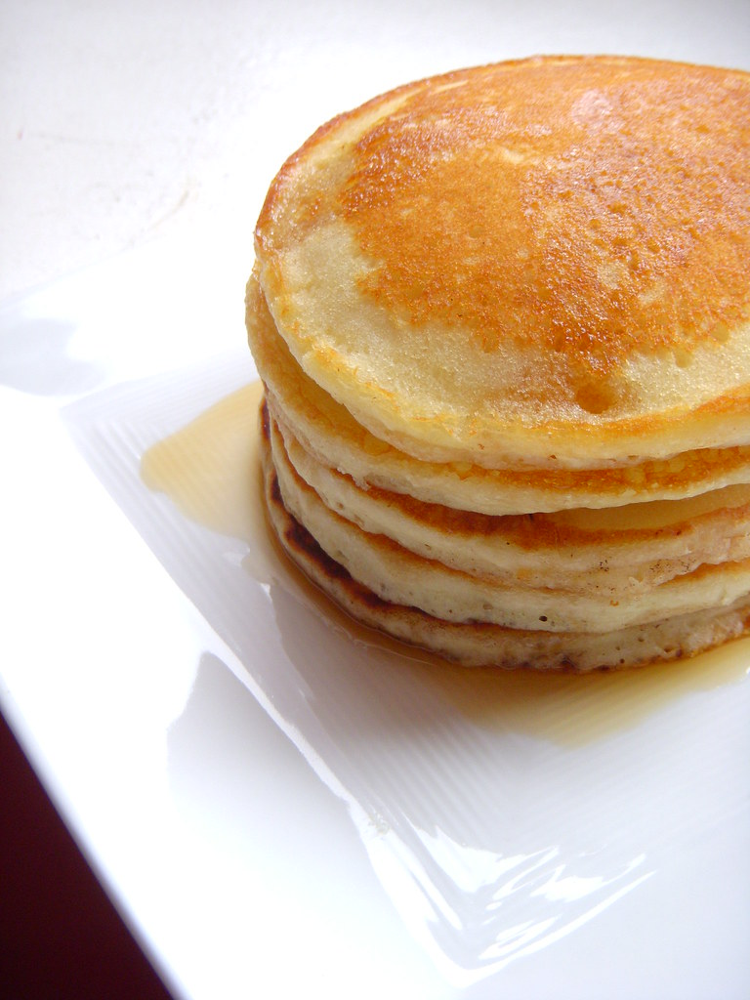

Pancakes

Ingredients
- 1 1/2 cups flour
- 3 1/2 teaspoons baking powder
- pinch of salt
- 1 tbsp white sugar
- 1 1/4 cups mik
- 1 egg
- 3 tbsp butter, melted
Steps
-
Sift together flour, baking powder, salt and sugar in a large bowl. Make
a hole in the center and pour in milk, egg and melted butter. Mix until
smooth.
-
Heat an oiled griddle or frying pan on medium heat. Pour batter onto
griddle and bake pancakes.